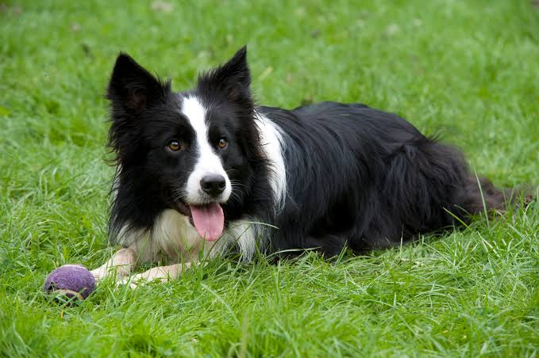

Perro Doméstico
Los perros son conocidos por su lealtal y capacidad para conectar con los humanos. Son animales muy sociables que requieren paseos diarios, estimulación mental y son excelentes compañeros para toda la familia.
Leer más¿Conoces a tus mascotas?
(Borrador para la guía jsjsjsj :v)

Los perros son conocidos por su lealtal y capacidad para conectar con los humanos. Son animales muy sociables que requieren paseos diarios, estimulación mental y son excelentes compañeros para toda la familia.
Leer másLos gatos son mascotas independientes, ágiles y sumaente limpias. Se adaptan muy bien a la vida en espacios interiores, disfrutan de largas siestas y expresan su afecto de forma sutil a través del ronroneo.
Leer másLos conoejos son animales dóciles, silenciosos y muy activos que necesitan espacio para saltar y explorar. Su cuidado requiere una dieta estricta basada en heno fresco y un manejo delicado para ganar su confianza.
Leer más